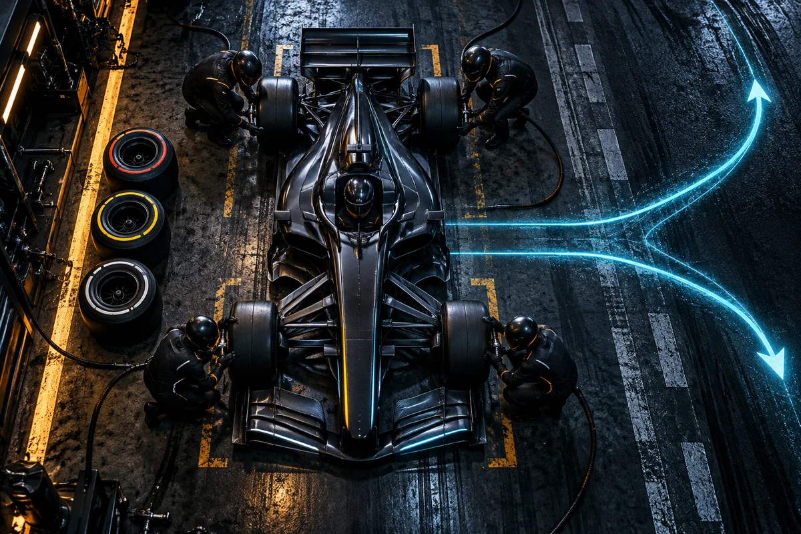
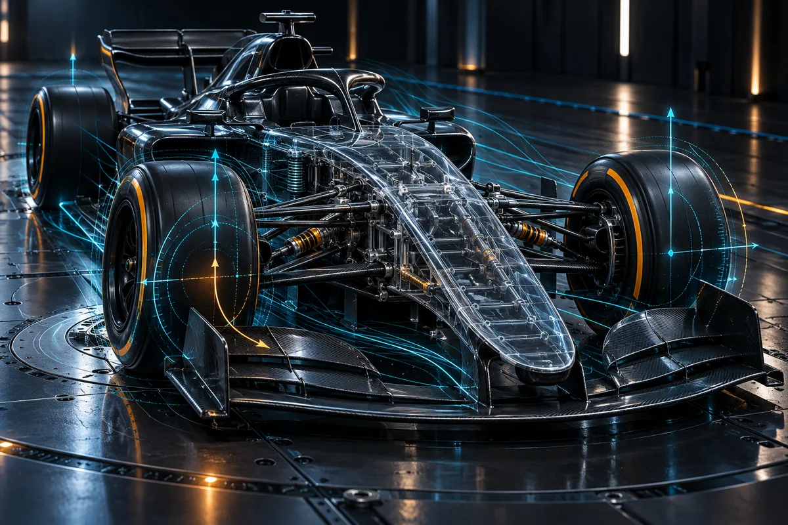
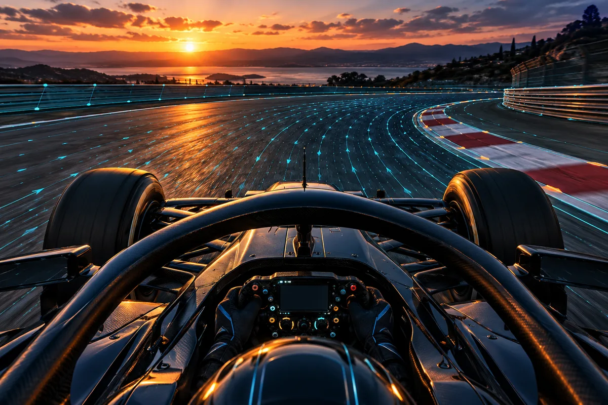
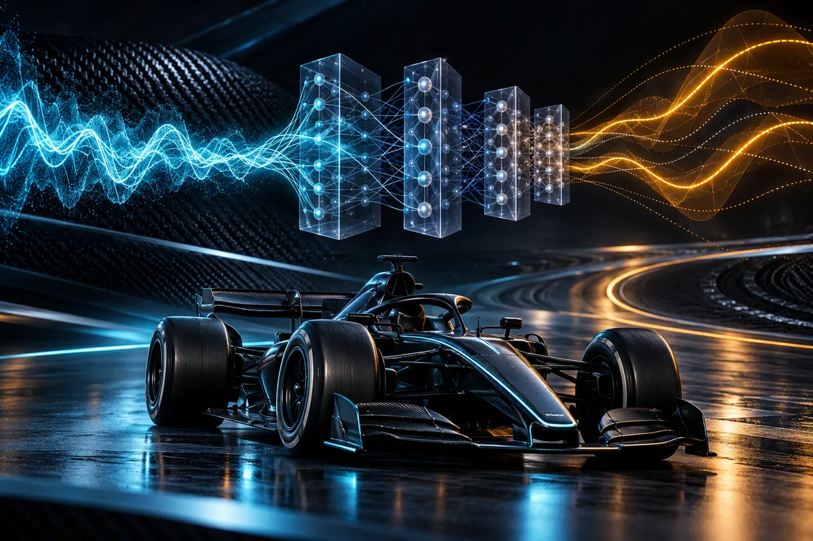
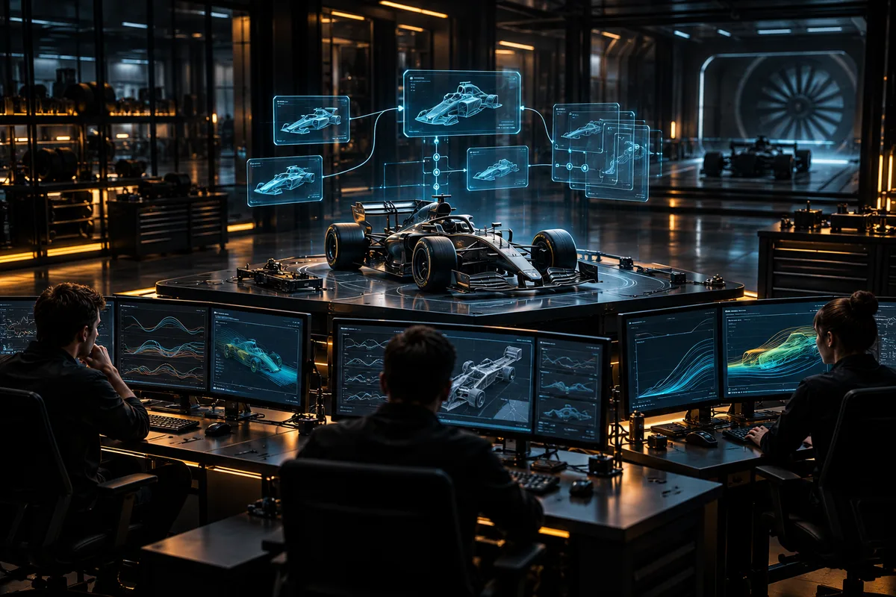
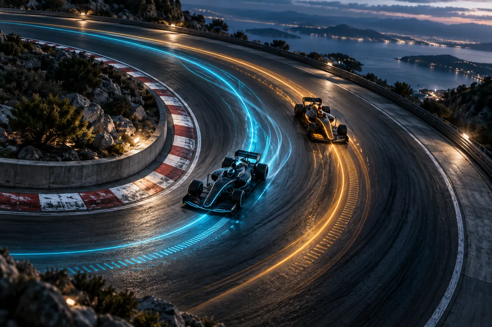
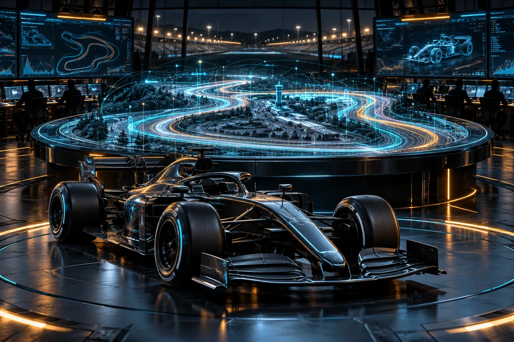

101 / CONCEPT VISUAL101
Race Strategy & Pit Stop
Modelagem do ritmo, janelas de parada e análise de cenários simulados.
DATA. PACE.
PRECISION.
Da telemetria bruta a decisões de engenharia: modelos, física, experimentos e validação.

101 / CONCEPT VISUALModelagem do ritmo, janelas de parada e análise de cenários simulados.

102 / CONCEPT VISUALVelocidade, RPM, acelerador, freio e marcha medidos via OpenF1.

103 / CONCEPT VISUALOptical flow e técnicas de visão computacional para sequências de teste.

104 / CONCEPT VISUALSéries temporais, baselines e treinamento de redes recorrentes.

106 / CONCEPT VISUALRegistro de experimentos, inferência e engenharia de pipelines analíticos.

109 / CONCEPT VISUALQuatro minutos de trajetória e telemetria de três pilotos na corrida de 2024.

111 / CONCEPT VISUALOito modelos com resultados via FastF1/Jolpica. Treino em 2022 e validação em 2023.
Compare configurações das asas dianteira e traseira sobre a mesma velocidade observada. Importe coeficientes de CFD ou de ensaio e exporte uma geometria conceitual paramétrica.
Estime energia recuperável, perdas de conversão e evolução do estado de carga sobre telemetria real. Compare cenários e examine o balanço energético.
Calcule um perfil de velocidade sobre geometria de pista importada. Compare setups A/B e examine a sensibilidade de massa, potência, aderência e aerodinâmica.
Hipótese. Instrumentação. Modelo. Experimento. Evidência.
Estudos independentes com dados históricos da F1. Cada projeto identifica a fonte, o período e as estimativas calculadas.
Conhecer o F1-PIP ↗Projetos de dados, software e engenharia aplicados à investigação de desempenho. Arte procedural demonstrativa; sem afiliação com equipes ou pilotos.